מזל טוב!
הסוכן שלכם עולה לאוויר.
מכאן זה שלכם. מדריך אחד לכל הצוות: איך עונים ללקוחות בקלאודצ'אט, איך עוצרים את הסוכן כשנציג נכנס לשיחה, ואיך המנהלים רואים אותו, מלמדים אותו ומשפרים אותו בפורטל.
- הסוכן עונה לבד, עד שנציג נכנס לשיחה. נציג שכותב ללקוח עוצר את הסוכן אוטומטית בשיחה הזו (צעד 7).
- כל טעות של הסוכן היא הזדמנות. משוב קצר בפורטל הופך לשיפור אמיתי (צעד 24).
קלאודצ'אט: איפה עונים ללקוחות
כל שיחה עם לקוח, בוואטסאפ, באינסטגרם, בפייסבוק או באתר, מגיעה למסך אחד: הלייב צ'אט. כאן רואים מה הסוכן כתב, ומכאן נציג נכנס לשיחה כשצריך.
נכנסים לקלאודצ'אט
נכנסים לכתובת למטה עם המייל והסיסמה שקיבלתם בהזמנה למערכת. מסמנים "זכור אותי" כדי לא להתחבר בכל פעם.
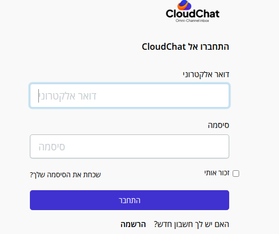
- 1דואר אלקטרוני: המייל שאליו קיבלתם את ההזמנה.
- 2הסיסמה שבחרתם.
- 3התחבר.
- 4שכחתם סיסמה? הקישור שולח מייל לאיפוס.
היכרות עם מסך הלייב צ'אט
אחרי הכניסה לוחצים למעלה על "איזור הצ'אטים". זה המסך שבו עובדים כל היום. הוא בנוי מימין לשמאל, בדיוק בסדר שבו עובדים:
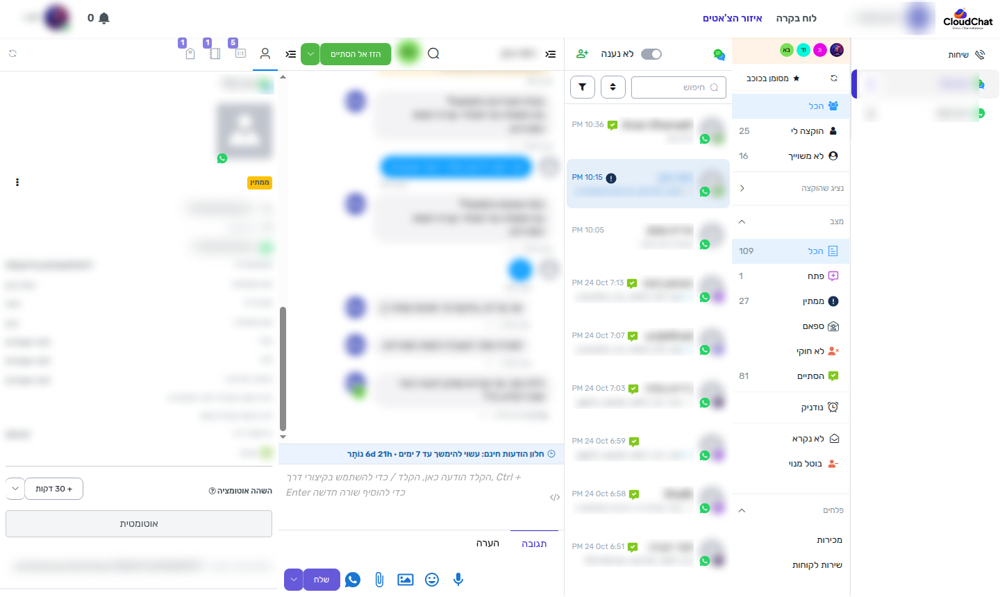
- 1הערוצים: "שיחות" מציג הכול, ומתחתיו כל בוט או ערוץ בנפרד.
- 2התיקיות שלי: "הוקצה לי" (השיחות שלי) ו"לא משויך" (שיחות שעוד אין להן נציג).
- 3מצב: סינון לפי סטטוס השיחה. המספר ליד כל סטטוס הוא כמות השיחות בו.
- 4רשימת השיחות, עם חיפוש לפי שם או טלפון. לחיצה על שיחה פותחת אותה.
- 5"לא נענה": מציג רק שיחות שמחכות לתשובה.
- 6השיחה עצמה: כל מה שהלקוח והסוכן כתבו.
- 7כפתור הסטטוס: מעבירים את השיחה לסטטוס הבא (צעד 4).
- 8הנציג המטפל: לחיצה מעבירה את השיחה לנציג אחר (צעד 5).
- 9השהיית האוטומציה: עוצרת את הסוכן בשיחה הזו (צעד 6).
רואים רק את מה שרלוונטי: סינון לפי סטטוס
בעמודת התיקיות בוחרים מה רואים ברשימה. לחיצה על תיקייה מסננת את הרשימה מיד.
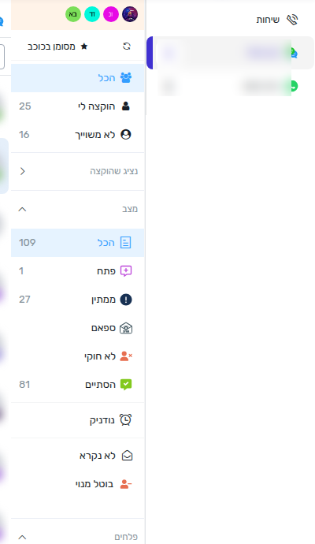
- 1הכל: כל השיחות בערוץ שנבחר.
- 2הוקצה לי: השיחות שלי. לא משויך: שיחות שאף נציג עוד לא לקח.
- 3מצב: כל שיחה נמצאת בסטטוס אחד, ואפשר לסנן לפיו.
- 4בחירת ערוץ או בוט מצמצמת את כל התיקיות אליו.
| סטטוס | מה זה אומר |
|---|---|
| פתח | שיחה פעילה שמחכה לטיפול. כאן מתחילים כל בוקר. |
| ממתין | השיחה עדיין חיה, אבל מחכים למשהו: תשובה מהלקוח, בדיקה פנימית, או טיפול של נציג. |
| הסתיים | הטיפול נגמר. השיחה יורדת מהרשימה הפעילה ונשמרת בהיסטוריה. |
| נודניק | שיחה שהוסתרה לזמן קצוב, וחוזרת לבד בזמן שנבחר. |
| ספאם / לא חוקי | הודעות זבל או פניות לא רלוונטיות. מעבירים לכאן כדי לנקות את הרשימה. |
| לא נקרא | שיחות עם הודעות שאף אחד עוד לא פתח. |
| בוטל מנוי | לקוחות שביקשו לא לקבל הודעות. |
מחליפים סטטוס לשיחה
בראש השיחה יש כפתור ירוק. לחיצה עליו מעבירה את השיחה לשלב הבא (למשל "הזז אל הסתיים"). החץ שלידו פותח את כל האפשרויות.
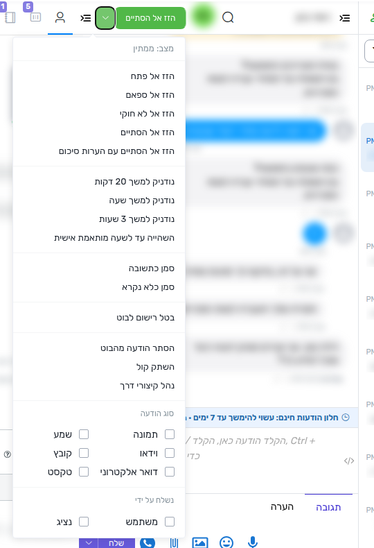
- 1הפעולה הבאה בלחיצה אחת.
- 2החץ: כל הסטטוסים.
- 3העברה לסטטוס אחר: פתח, ספאם, לא חוקי, הסתיים. "עם הערות סיכום" מוסיף סיכום קצר לשיחה.
- 4נודניק: מסתירים את השיחה ל 20 דקות, שעה, 3 שעות או לשעה שבוחרים. היא תחזור לבד.
מעבירים שיחה לנציג אחר
לוחצים על העיגול של הנציג בראש השיחה, ובוחרים למי להעביר. השיחה עוברת לתיקייה "הוקצה לי" של הנציג שנבחר.
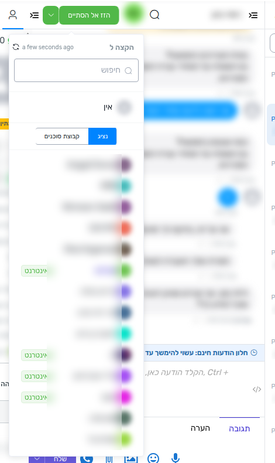
- 1העיגול של הנציג המטפל כרגע. לחיצה פותחת את התפריט.
- 2חיפוש נציג לפי שם.
- 3"אין": מחזיר את השיחה ל"לא משויך".
- 4נציג בודד, או קבוצת סוכנים (למשל מכירות או שירות).
- 5רשימת הנציגים. "באינטרנט" מסמן מי מחובר עכשיו.
עוצרים את הסוכן בשיחה (השהיית אוטומציה)
זה הכפתור הכי חשוב במדריך. כל עוד השיחה במצב "אוטומטית", הסוכן החכם עונה ללקוח לבד. כשנציג רוצה לנהל את השיחה בעצמו, משהים את האוטומציה, והסוכן מפסיק לענות בשיחה הזו בלבד. כל שאר השיחות ממשיכות כרגיל.
הכפתור נמצא בפאנל הלקוח, בצד שמאל של המסך, תחת "השהה אוטומציה".
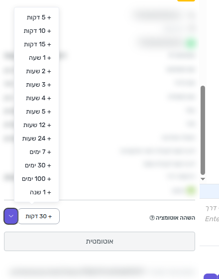
- 1לחיצה על "+ 30 דקות": הסוכן עוצר ל 30 דקות.
- 2החץ: בחירת זמן אחר.
- 3משך ההשהיה: מ 5 דקות ועד שנה.
- 4"אוטומטית": הסוכן פעיל ועונה בשיחה הזו.
אחרי ההשהיה, השורה התחתונה מתחלפת בשעון שסופר לאחור. כשהזמן נגמר, הסוכן חוזר לענות לבד.
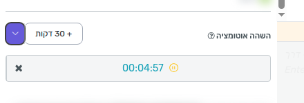
- 1הזמן שנשאר עד שהסוכן חוזר.
- 2האיקס: מחזיר את הסוכן לפעולה עכשיו, בלי לחכות.
מה עוצר את הסוכן, ומה מפעיל אותו מחדש
הסוכן עוצר כש...
- נציג שולח הודעה ללקוח מהלייב צ'אט. הסוכן מושהה אוטומטית בשיחה הזו, לפי ברירת המחדל ל 30 דקות.
- נציג לוחץ "השהה אוטומציה" ובוחר זמן.
הסוכן חוזר כש...
- זמן ההשהיה נגמר. השעון מגיע לאפס והסוכן ממשיך לענות.
- נציג לוחץ על האיקס ליד השעון.
הלקוח לא כתב 24 שעות? שולחים תבנית
בוואטסאפ אפשר לכתוב חופשי ללקוח רק בתוך 24 שעות מההודעה האחרונה שלו. אחרי זה הוואטסאפ מאפשר רק הודעת תבנית מאושרת. קלאודצ'אט מראה את זה בבירור:
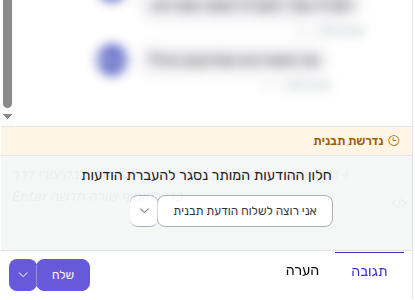
- 1"נדרשת תבנית": החלון נסגר, אי אפשר לכתוב חופשי.
- 2"אני רוצה לשלוח הודעת תבנית": בוחרים תבנית מאושרת ושולחים.
- 3תגובה נשלחת ללקוח. הערה נשארת פנימית לצוות.
כשהלקוח עונה לתבנית, החלון נפתח מחדש ל 24 שעות, ואפשר שוב לכתוב חופשי.
מסמנים אם אתם זמינים
לוחצים על התמונה שלכם בפינה השמאלית העליונה. נקודה ירוקה אומרת שאתם מחוברים וזמינים. יוצאים להפסקה או מסיימים יום? בוחרים "הגדר את עצמך בתור רחוק", כדי ששיחות חדשות לא יגיעו אליכם.
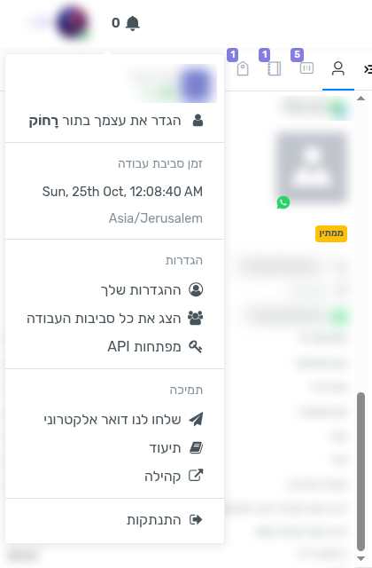
- 1התמונה שלכם. הנקודה הירוקה: מחוברים.
- 2"הגדר את עצמך בתור רחוק": לא זמינים כרגע.
מפעילים התראות בדסקטופ
כדי לשמוע ולראות כל שיחה חדשה גם כשאתם בחלון אחר. עושים את זה פעם אחת בכל מחשב, בדפדפן שבו עובדים.
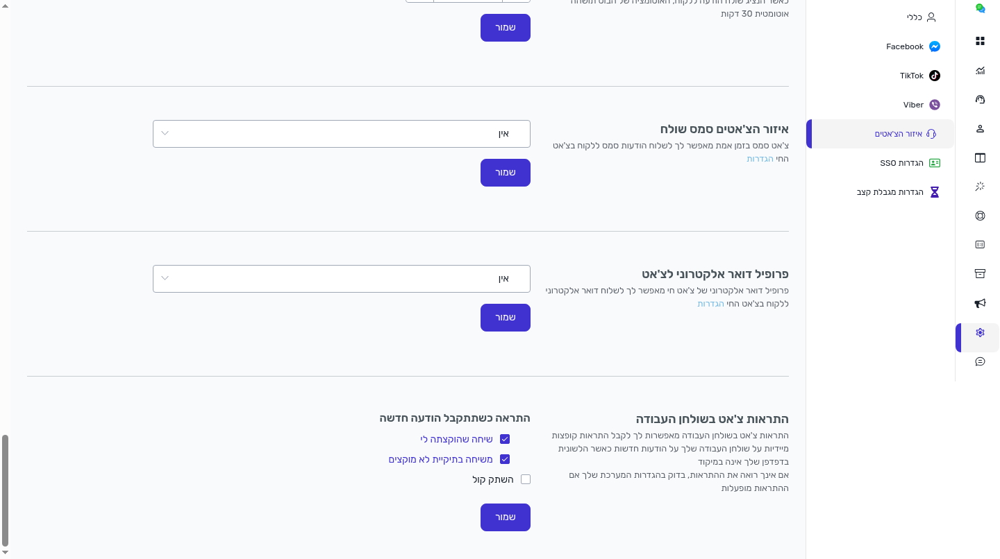
- 1גלגל השיניים בתפריט הימני (הגדרות).
- 2"איזור הצ'אטים".
- 3גוללים לתחתית העמוד, לקטע "התראות צ'אט בשולחן העבודה".
- 4מסמנים "שיחה שהוקצתה לי" ו"משיחה בתיקיית לא מוקצים". "השתק קול" נשאר לא מסומן.
- 5שמור.
האפליקציה בנייד
אותו לייב צ'אט, בכיס. עונים ללקוחות, מעבירים שיחות ומקבלים התראות גם כשלא ליד המחשב.
מורידים את האפליקציה
סורקים את הברקוד עם המצלמה של הטלפון, או מחפשים בחנות "chatbot live chat".
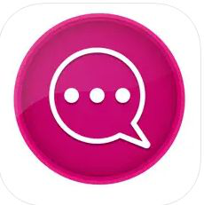
אייפון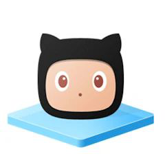
אנדרואידשימו לב לאייקון: באייפון ובאנדרואיד האפליקציה נראית אחרת, אבל זו אותה מערכת.
מתחברים ומפעילים התראות בטלפון
- פותחים את האפליקציה ומתחברים עם אותו מייל ואותה סיסמה של קלאודצ'אט במחשב.
- כשהטלפון שואל אם לאפשר התראות, לוחצים "אפשר". בלי זה לא תדעו על שיחה חדשה.
- בוחרים את סביבת העבודה של העסק, ונכנסים לשיחות. התיקיות, הסטטוסים, ההעברה לנציג וההשהיה עובדים בדיוק כמו במחשב.
הפורטל: רואים את הסוכן, ומשפרים אותו
בפורטל רואים כל שיחה של הסוכן, את ההנחיות שלפיהן הוא עובד, את הידע שלו, ונותנים משוב שהופך לשיפור. הלקוחות לא רואים את הפורטל.
נכנסים לפורטל
עם שם המשתמש והסיסמה שקיבלתם מאיתנו.
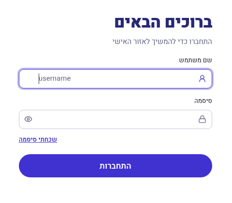
- 1שם משתמש.
- 2סיסמה.
- 3שכחתי סיסמה: שולח קישור לאיפוס.
- 4התחברות.
הדשבורד: תמונת מצב בשנייה
המסך הראשון אחרי הכניסה. כמה פניות פתוחות, כמה הסוכן סגר לבד, וכמה זמן לוקח לסגור פנייה.
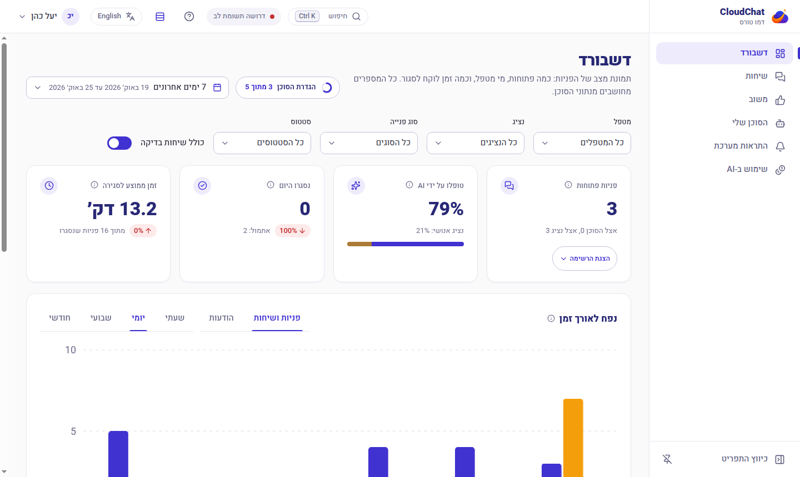
- 1התפריט: דשבורד, שיחות, משוב, הסוכן שלי ועוד.
- 2סינון לפי מטפל, נציג, סוג פנייה וסטטוס.
- 3המדדים המרכזיים. העכבר על ה i מסביר כל מדד.
- 4החלפת שפה לאנגלית.
רואים את השיחות
בתפריט: "שיחות". כל שיחה של הסוכן, בזמן אמת.
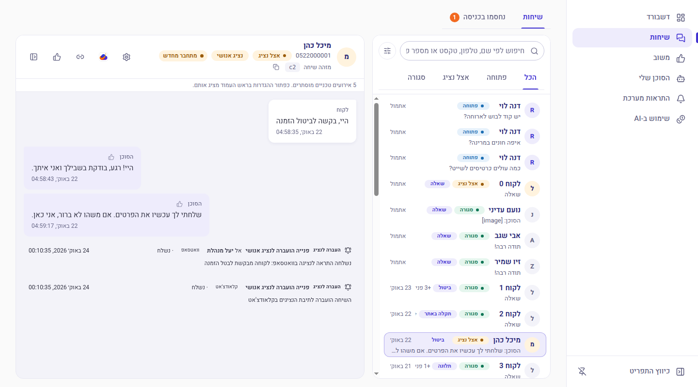
- 1חיפוש לפי שם, טלפון, טקסט או מספר.
- 2סינון: הכל, פתוחה, אצל נציג, סגורה.
- 3לחיצה על שיחה פותחת אותה.
- 4פתיחת השיחה בקלאודצ'אט, כדי לענות ללקוח.
- 5משוב על השיחה (צעד 25).
- 6היד הקטנה ליד הודעה של הסוכן: משוב על ההודעה הזו בדיוק.
- 7פרטי הלקוח והפניות שלו.
רואים את ההנחיות של הסוכן
בתפריט: "הסוכן שלי". כאן כתוב איך הסוכן חושב ומה הוא יודע.
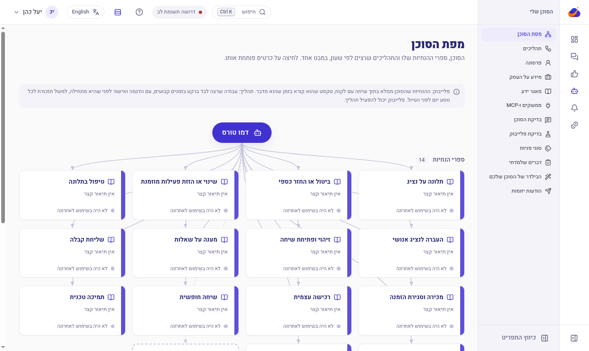
- 1מפת הסוכן: כרטיס לכל נושא שהסוכן מטפל בו.
- 2פרסונה: השם, הסגנון ואופן הדיבור.
- 3מידע על העסק ומאגר הידע: העובדות שהסוכן עונה לפיהן.
- 4בדיקת הסוכן: צ'אט ניסיון, בלי לקוחות אמיתיים.
- 5לחיצה על כרטיס פותחת את ההנחיה המלאה.
כל כרטיס הוא "ספר הנחיות": מתי הוא חל, מה הסוכן עושה, ומה אסור לו. כך זה נראה:
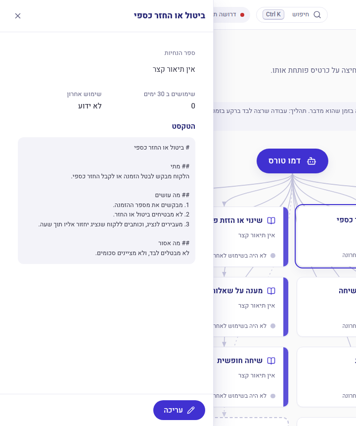
- 1ההנחיה עצמה, במילים פשוטות.
- 2עריכה, למי שיש הרשאה.
הפרסונה: איך הסוכן מדבר
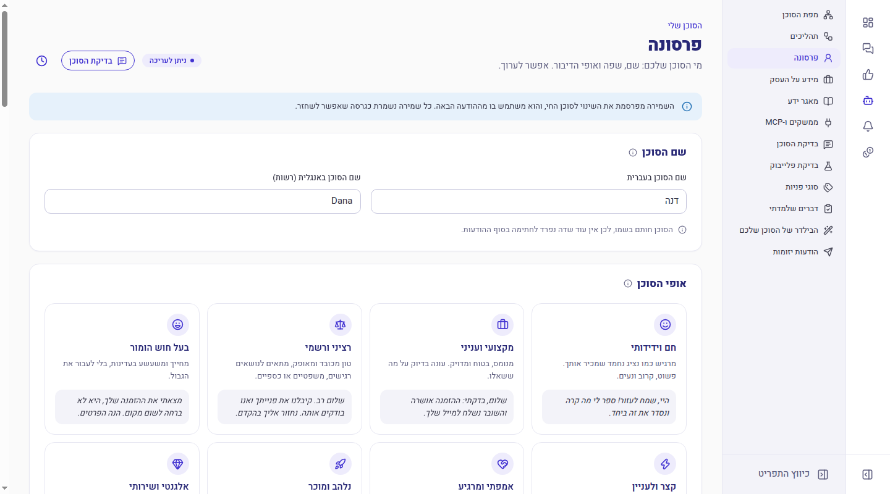
- 1שם הסוכן, בעברית ובאנגלית.
- 2אופי הסוכן: הסגנון שבו הוא כותב, עם דוגמה לכל סגנון.
- 3בדיקת הסוכן: לנסות איך זה נשמע לפני שמשנים.
- 4היסטוריית גרסאות: כל שמירה נשמרת, ואפשר לשחזר.
מאגר הידע: מה הסוכן יודע
בתפריט הפנימי: "מאגר ידע". כאן נמצאות כל העובדות שהסוכן עונה לפיהן: שעות, מחירים, מדיניות, שאלות נפוצות. כל פריט הוא מאמר קצר בנושא אחד.
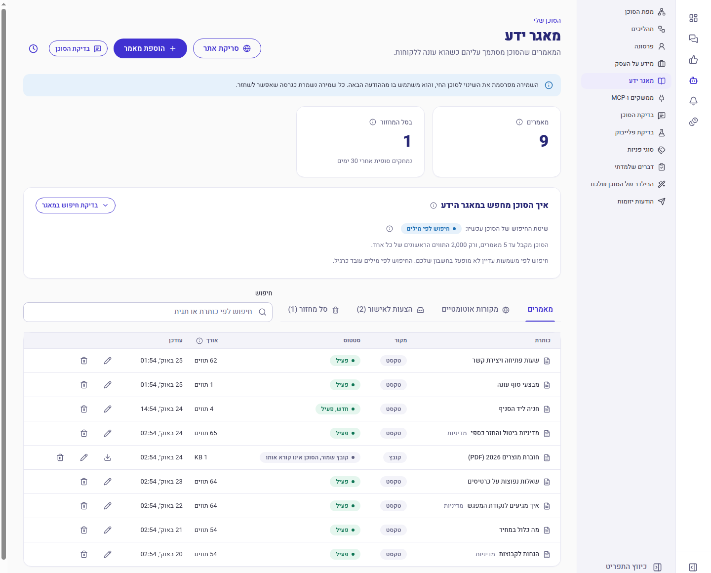
- 1"מאגר ידע" בתפריט הפנימי של "הסוכן שלי".
- 2הוספת מאמר חדש (צעד 19).
- 3סריקת אתר: מכניסה אתר שלם בבת אחת (צעד 19).
- 4כל שמירה עוברת לסוכן החי מההודעה הבאה, ונשמרת כגרסה שאפשר לשחזר.
- 5לשוניות: מאמרים, מקורות אוטומטיים (צעד 20), הצעות לאישור (צעד 24), סל מחזור (צעד 23).
- 6בכל שורה: עיפרון לעריכה ופח למחיקה.
- 7"קובץ שמור, הסוכן אינו קורא אותו": קובץ שנשמר לעיון בלבד (הסבר בצעד 19).
מוסיפים מידע חדש
לוחצים "הוספת מאמר", בוחרים סוג, ממלאים ושומרים.
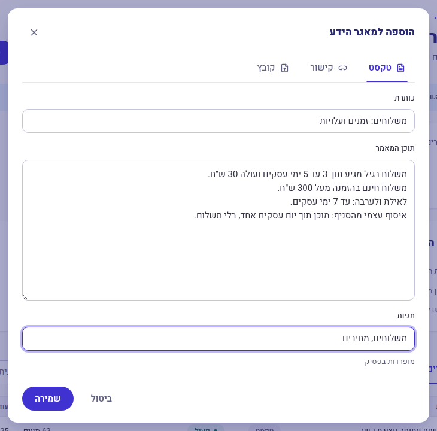
- 1סוג המאמר: טקסט, קישור או קובץ.
- 2כותרת ברורה, כמו שלקוח היה שואל.
- 3התוכן עצמו, במשפטים פשוטים.
- 4תגיות (לא חובה), מופרדות בפסיק. עוזרות לסוכן למצוא את המאמר.
- 5שמירה. מההודעה הבאה הסוכן כבר משתמש במידע.
| סוג | מה הסוכן מקבל |
|---|---|
| טקסט | את כל הטקסט. זו הדרך המומלצת. |
| קישור | את הקישור ואת ההערה שכתבתם. הסוכן יכול לשלוח את הקישור ללקוח, אבל לא קורא את מה שכתוב בעמוד. |
| קובץ | קובץ טקסט (txt, csv, md) נקרא במלואו. PDF, Word, Excel ותמונות נשמרים לעיון בלבד, ומסומנים "קובץ שמור, הסוכן אינו קורא אותו". רוצים שהסוכן יכיר את התוכן? מעתיקים אותו למאמר טקסט. |
יש לכם אתר עם הרבה מידע? "סריקת אתר" קוראת את העמודים הציבוריים של האתר ומחלקת אותם למאמרים לפי נושאים. רואים הכול לפני שמשהו נשמר, ומאמרים שכבר קיימים לא נכפלים.
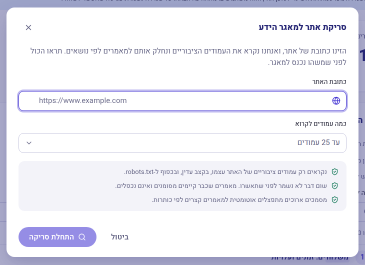
רוצים שהאתר ייבדק שוב לבד מדי פעם? זה בצעד 20.
מחברים אתר כמקור מתעדכן
לשונית "מקורות אוטומטיים", ואז "הוספת מקור". מוסיפים כתובת של אתר שהמידע בו משתנה (האתר שלכם, עמוד מחירים, אתר של ספק), והמערכת תחזור לקרוא אותו לפי התדירות שתבחרו.
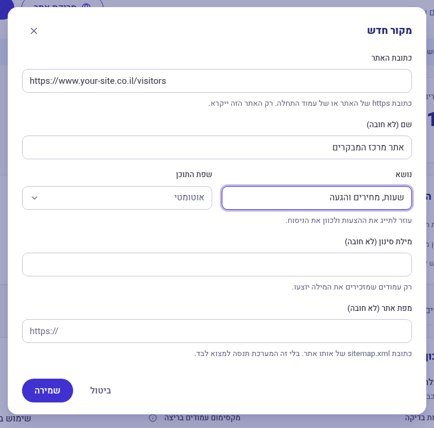
- 1כתובת האתר, או עמוד התחלה. רק האתר הזה ייקרא.
- 2שם פנימי, לזיהוי ברשימה.
- 3נושא: מכוון מה לחפש ומתייג את ההצעות.
- 4מילת סינון (לא חובה): רק עמודים שמזכירים אותה יוצעו.
- 5שמירה. מרגע זה האתר ברשימת המקורות.
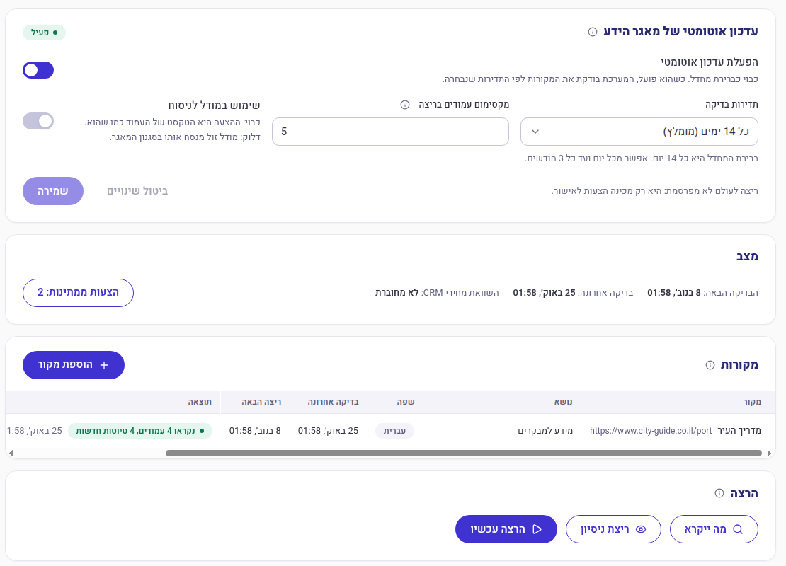
- 1הפעלת העדכון האוטומטי. כבוי כברירת מחדל.
- 2כל כמה זמן לבדוק: מכל יום ועד כל 3 חודשים. ברירת המחדל: כל 14 יום.
- 3שמירת ההגדרות.
- 4כמה הצעות מחכות לאישור שלכם.
- 5הוספת מקור, ידנית או מהאתר.
- 6המקור, ומתי נבדק ונבדוק שוב.
- 7"מה ייקרא" ו"ריצת ניסיון" מראים מה יקרה בלי לשמור. "הרצה עכשיו" בודקת מיד.
איך המערכת מנהלת מידע קיים, מעודכן וחדש
בכל בדיקה המערכת משווה את מה שקראה עם מה שכבר במאגר, ויש שלוש תוצאות בלבד. שום דבר לא נכנס לסוכן בלי אישור.
מידע חדש
עמוד שלא היה במאגר. נפתחת הצעת מאמר חדש.
מידע שהשתנה
עמוד שקיים, אבל הטקסט בו השתנה (מחיר, שעות). נפתחת הצעת עדכון למאמר הקיים, עם ההשוואה.
מידע קיים
עמוד שלא השתנה, או תוכן שכבר במאגר. לא נוצרת הצעה, ואין כפילות.
כך נראית ריצה שבה שני עמודים כבר מוכרים:
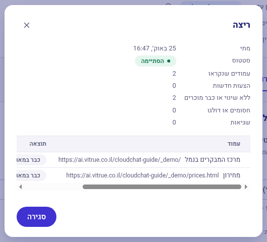
- 1לכל עמוד כתוב מה קרה: הצעת עדכון, ללא שינוי, כבר במאגר, או שגיאה.
וכך נראית הצעת עדכון. המערכת מסמנת מה השתנה, ומראה בדיוק מה יוצא ומה נכנס:
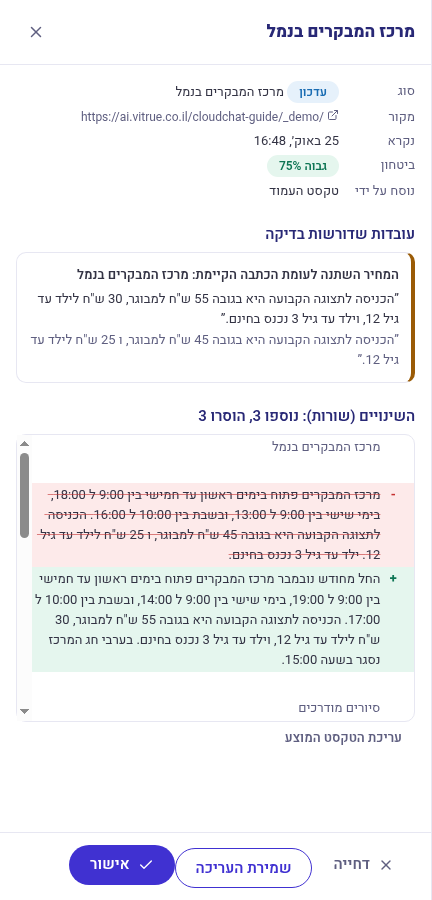
- 1הסוג: עדכון של מאמר קיים, לא מאמר חדש.
- 2עובדות שדורשות בדיקה: למשל שמחיר השתנה לעומת המאמר הקיים.
- 3השינויים, שורה מול שורה: אדום יוצא, ירוק נכנס.
- 4אישור: המאמר הקיים מתעדכן.
- 5שמירת עריכה: לתקן את הנוסח לפני שמאשרים.
עורכים מאמר, ובודקים שהסוכן מוצא אותו
לוחצים על העיפרון בשורה של המאמר, משנים ושומרים. השינוי עובר לסוכן מההודעה הבאה.
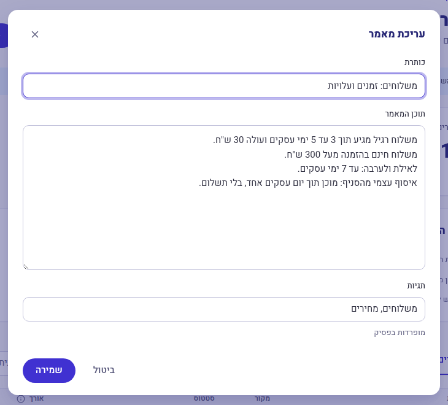
- 1משנים את הטקסט.
- 2שמירה. כל שמירה נשמרת כגרסה, ואפשר לחזור לגרסה קודמת דרך "יומן שינויים וגיבוי" (השעון בראש המסך).
רוצים לוודא שהסוכן ימצא את המידע? פותחים "בדיקת חיפוש במאגר", כותבים שאלה כמו שלקוח היה כותב, ורואים בדיוק אילו מאמרים יישלחו לסוכן.
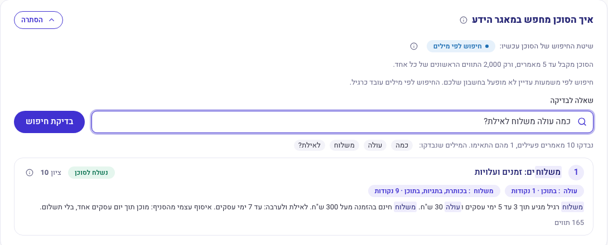
- 1כותבים שאלה של לקוח.
- 2בדיקת חיפוש.
- 3המאמרים שהסוכן יקבל, עם הסימון "נשלח לסוכן".
מוחקים מאמר, ומשחזרים אם צריך
לוחצים על הפח בשורה ומאשרים. המאמר יורד מהסוכן מיד, אבל לא נעלם: הוא עובר לסל המחזור ל 30 יום.
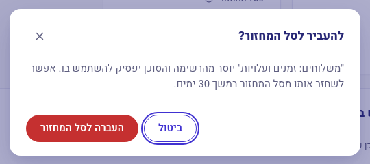
- 1"העברה לסל המחזור": הסוכן מפסיק להשתמש במאמר.
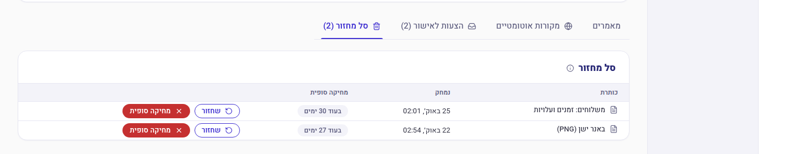
- 1הלשונית "סל מחזור".
- 2שחזור: המאמר חוזר לסוכן כמו שהיה.
- 3מחיקה סופית: אי אפשר לבטל. אחרי 30 יום זה קורה לבד.
מאשרים או דוחים הצעות
בלשונית "הצעות לאישור" מחכות כל הטיוטות שנאספו מהאתרים. הן לא במאגר ולא משפיעות על הסוכן עד שמאשרים.
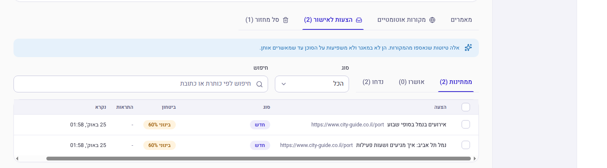
- 1הלשונית "הצעות לאישור", עם מספר ההצעות.
- 2סינון: ממתינות, אושרו, נדחו.
- 3כל הצעה: כותרת, מקור, סוג (חדש או עדכון למאמר קיים). לחיצה פותחת אותה.
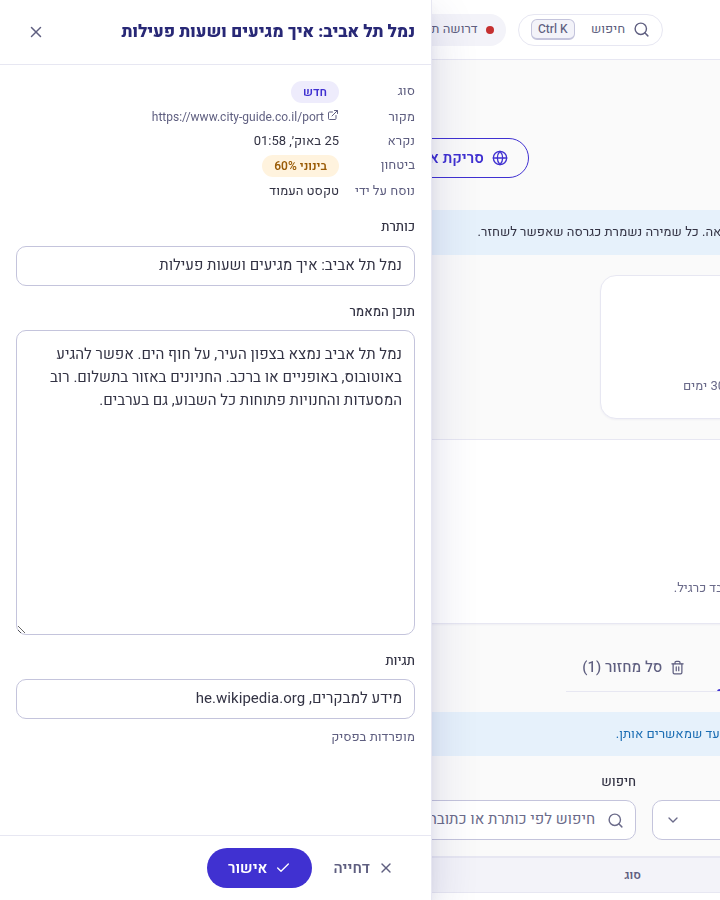
- 1אפשר לתקן את הכותרת והתוכן לפני האישור.
- 2אישור: המאמר נכנס למאגר, והסוכן משתמש בו מההודעה הבאה.
- 3דחייה: ההצעה נסגרת, ואותו נוסח לא יוצע שוב.
נותנים משוב על שיחה
שלושים שניות לשיחה. המשוב הוא הדרך שלנו לדעת מה הסוכן פספס, וממנו נבנה השיפור שלו.
- פותחים את השיחה במסך "שיחות" (צעד 15).
- לוחצים על היד הקטנה ליד ההודעה של הסוכן שפספסה. הטופס נפתח כשהוא כבר מסומן להודעה הזו. אפשר גם ללחוץ על כפתור המשוב בראש השיחה.
- ממלאים את הטופס ולוחצים "שליחת משוב".
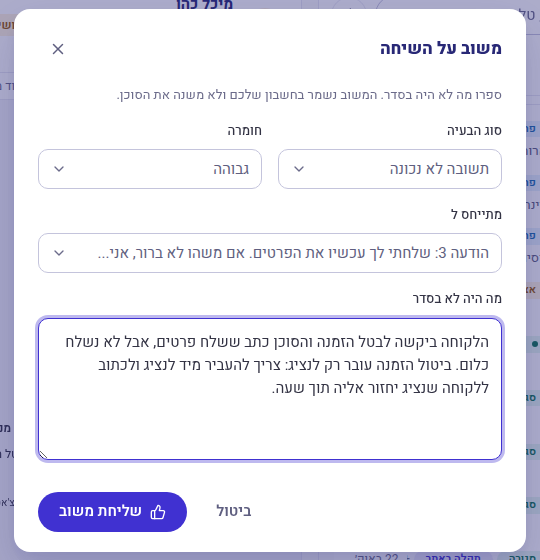
- 1סוג הבעיה: תשובה לא נכונה, טון, חסר ידע, בעיה בחיבור, אחר.
- 2חומרה: נמוכה, בינונית או גבוהה.
- 3מתייחס ל: ההודעה המדויקת שפספסה.
- 4מה היה לא בסדר, ומה הייתה התשובה הנכונה.
- 5שליחת משוב.
עוקבים אחרי המשוב ומאשרים שיפור
בתפריט: "משוב". כל משוב מקבל סטטוס, ורואים בדיוק איפה הוא עומד:
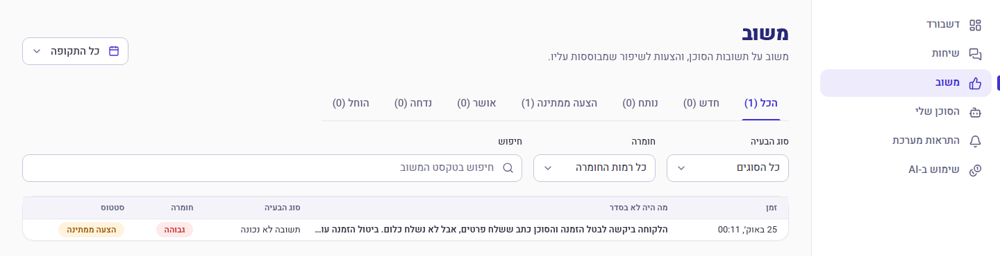
- 1לשוניות לפי סטטוס, עם מספר המשובים בכל אחד.
- 2סינון לפי סוג וחומרה, וחיפוש בטקסט.
- 3לחיצה על שורה פותחת את המשוב.
כשהמשוב נותח, מופיעה הצעה לשיפור: מה בדיוק ישתנה בהנחיה, אדום מה יוצא וירוק מה נכנס.
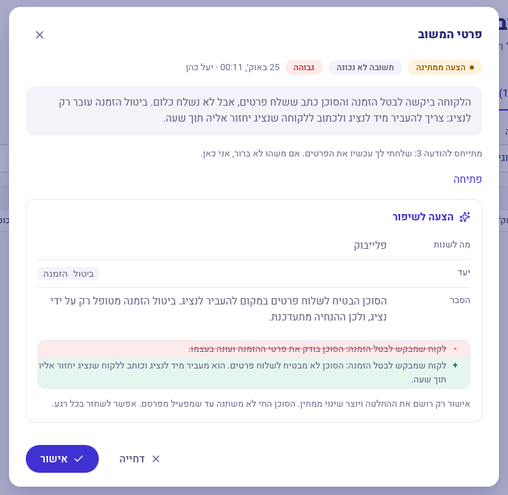
- 1הסטטוס של המשוב.
- 2השינוי המוצע: אדום יוצא, ירוק נכנס.
- 3אישור: השינוי נרשם ונכנס לסוכן אחרי פרסום.
- 4דחייה, עם סיבה. אפשר לפתוח שוב בכל רגע.
- 5פתיחת השיחה המקורית.
איך כותבים משוב שבאמת משפר
כותבים מה היה חסר, לא "לא טוב"
עובדה, שם, מספר.
לא: "התשובה לא טובה."
כן: "הסוכן אמר שאין חניה ליד הסניף. יש חניון בחינם מול הכניסה."
מסמנים את ההודעה המדויקת
היד הקטנה ליד ההודעה, או השדה "מתייחס ל". כך אנחנו יודעים לאיזה שלב בשיחה הכוונה.
כותבים את התשובה הנכונה
אם אתם יודעים אותה, כתבו אותה. כך המשוב הופך לידע חדש בסוכן ולא רק לתלונה.
כן: "משלוח לאילת לוקח 3 ימי עסקים, לא יום אחד."
חומרה לפי הנזק ללקוח
גבוהה: מידע שגוי, מחיר, לקוח תקוע או מפספס הזמנה. בינונית: מידע חסר, תשובה חלקית. נמוכה: טון, אורך, ניסוח.
בעיה אחת למשוב אחד
שלוש בעיות בהודעה אחת נקראות כתלונה כללית. שלושה משובים קצרים מטופלים כמו שלושה תיקונים.
בלי פרטים אישיים של הלקוח
לא צריך לכתוב טלפון, תעודת זהות או פרטי תשלום. השיחה כבר מקושרת למשוב.
התראות מערכת: מה יש כאן
בתפריט: "התראות מערכת". זה המקום שבו מגדירים מתי הסוכן מודיע לכם, למי, ובאיזה נוסח. הכל במקום אחד: מצב הסוכן, רשימת הנמענים, סוגי ההתראות, וההתראות האחרונות שנשלחו.
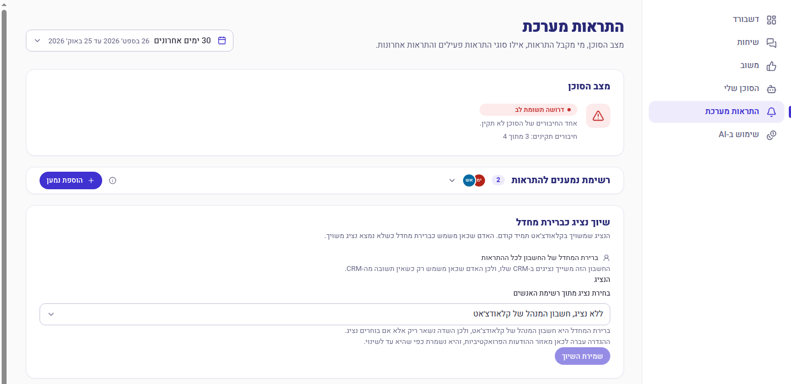
- 1"התראות מערכת" בתפריט.
- 2רשימת הנמענים: מי מקבל התראות (צעד 28).
- 3שיוך נציג כברירת מחדל: מי מקבל כשאין נציג משויך לפנייה.
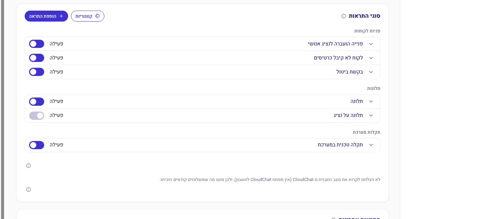
- 1הוספת סוג התראה חדש (צעד 29).
- 2כל סוג עם מתג פעיל או כבוי, ומי מקבל אותו (צעד 28).
- 3ההתראות האחרונות שנשלחו (צעד 29).
ברירת המחדל של כל סוג התראה אפשר לכבות וללהדליק בלחיצה. כבוי פירושו שההתראה לא נשלחת לאף אחד.
למי נשלחות ההתראות
רשימת נמענים היא רשימת האנשים במערכת. לכל אדם שם, טלפון לחשבון וואטסאפ וכתובת מייל. אפשר להוסיף אדם חדש, לערוך, או להסיר.
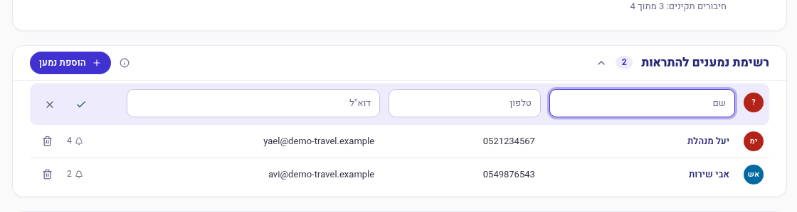
- 1הוספת נמען חדש.
- 2שם, טלפון ומייל של האדם.
- 3הסרה מהרשימה.
- 4לחיצה על הפרטים עורכת אותם.
ולכל סוג התראה בוחרים למי היא נשלחת, ואיך: בוואטסאפ, במייל, או שניהם. אדם יכול לקבל סוג אחד ולא אחר.
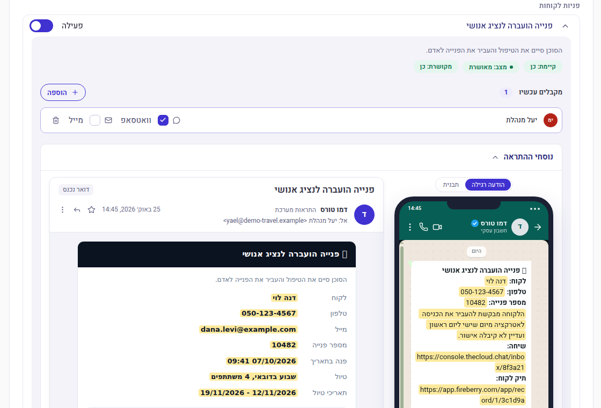
- 1המתג של הסוג הזה: פעיל או כבוי.
- 2"הוספה": מוסיפים אדם לרשימה של ההתראה הזו.
- 3לכל אדם מסומן אם הוא מקבל בוואטסאפ, במייל, או בשניהם. אפשר להסיר.
- 4"נוסחי ההתראה": איך נראית ההודעה (צעד 29).
הנוסחים, והיסטוריית ההתראות
לכל סוג התראה יש נוסח: הודעת הוואטסאפ והודעת המייל. רואים בדיוק מה הלקוח והצוות יקבלו, עם שדות שמתמלאים לבד (שם הלקוח, מספר פנייה, קישור לשיחה, קישור ללקוח).
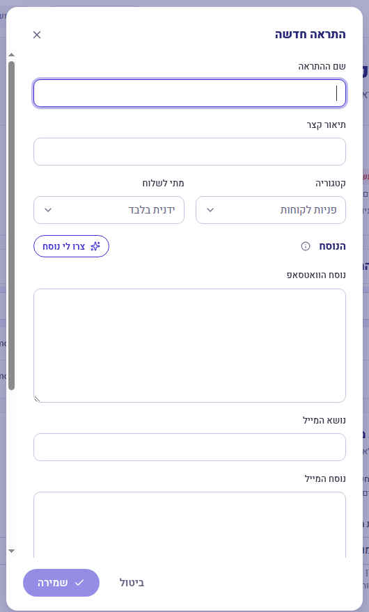
- 1שם ההתראה: מה ההתראה מודיעה.
- 2מתי לשלוח: ידנית, או לפי מה שקרה בשיחה.
- 3"צרו לי נוסח": טיוטה בשפה פשוטה, שאפשר לתקן.
- 4נוסח הוואטסאפ, עם שדות שמתמלאים לבד.
- 5נוסח המייל, כולל שורת נושא.
- 6שמירה. ההתראה נכנסת לרשימה, ואפשר לכבות אותה בכל רגע.
מה כבר נשלח? בתחתית המסך טבלת ההתראות האחרונות: מתי, על מה, באיזה ערוץ, למי, והאם נמסרה. לחיצה על מספר הפנייה פותחת את השיחה, כדי לראות מה קרה.
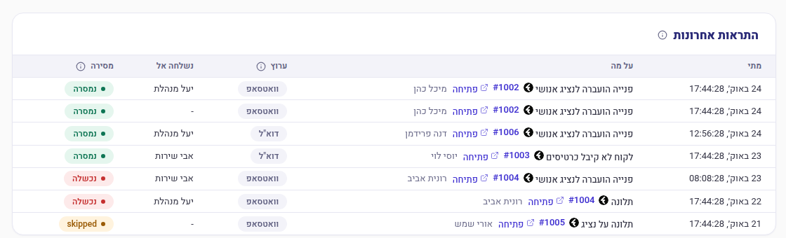
- 1כל שורה: מתי, על מה, ערוץ, נמען ומצב מסירה. "נכשלה" מסומן באדום.
צריכים עזרה?
באתר cloudchat.co.il יש סרטון לכל פעולה במערכת.
שאלה, תקלה או משהו לא ברור: כותבים בקבוצה ואנחנו עונים.
אחרי העלייה לאוויר תקבלו מייל עם כל הקישורים, המשתמשים וההנחיות.
משוב בפורטל (צעד 24). זו הדרך המהירה ביותר לשיפור.